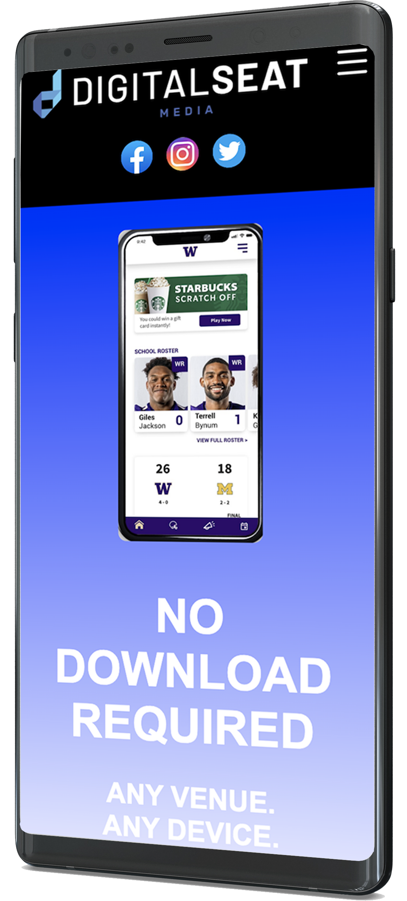

Digital Seat Website
I am an employee with the sports company, Digital Seat Media. It is a "mobile web-based platform that provides interactive fan engagement at live events by allowing fans to simply scan a QR-code-enabled tag located directly on the armrest of their seat." For one of our many projects, I was tasked to redesign the current website into a more user friendly, visually appealing, and structured layout. The website was recreated using html, css, and javascript that also demonstrates a compatible design for desktops, tablets, and mobile devices.
Digital Seat Mobile
Prior to coding the website, several low and high-fidelity wireframe mock-up iterations were designed in an XD document. The website consists of minimal information, creating a user-friendly experience that's inviting and easy to navigate. It is divided into five different segments consisting of a hero section, the body, which is comprised of three separate parts and a contact page. Other than the brand and contact page, a linear background color gradient was used to complement the color within the images. Once the design was finalized and approved, I began the coding process. CSS flexbox was used to structure the majority of the website for purposes of regulating the spacing and dimensions, allowing for proper image and text alignment. At the top of the website, the hero section provides a brief introduction regarding the objective of the company with the navigation bar placed right above, consisting of the company's logo, social media icons, and inoperable demo navigation items.

The second section displays a short 30 second tutorial video regarding the digital seat tags, explaining how fans can participate at a sporting event using the qr code. I used an iframe tag to embed the video using a width="600" and a height="360. The items adjacent to the video in the desktop view and below the video in the tablet and mobile view were placed in a list item tag to define the items that are included within the qr code. The third section displays three different mobile devices imitating players on the field, providing the user with a three step guide regarding the functionality of the qr code. The fourth and fifth section of the website displays the brands used by digital seat and the contact page respectively. Want to see for yourself?! Click view project below and Get In The Game!!